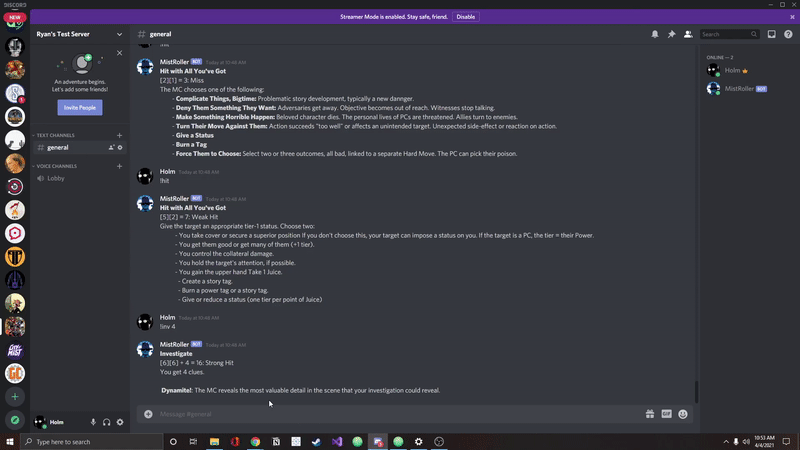

MistRoller
MistRoller is a dice rolling bot for use in Discord servers. MistRoller is custom built for the roleplaying game called City of Mist. In City of Mist, players will select one of several actions (called moves) and then recieve an outcome based on how their dice roll. MistRoller calculates the result of the roll based option the action players have chosen; in addition, MistRoller also summarizes all relevant information that would go with that roll. Without this summary, players would have to memorize rules or find the relevant table summary.
